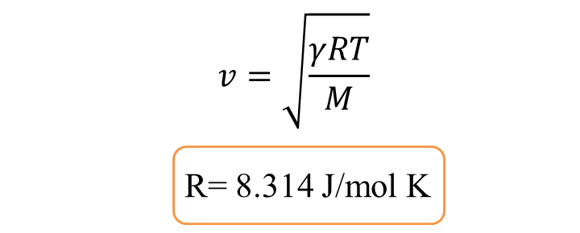

1. SIMPLE HARMONIC MOTION
SPRING
k: spring constant (N/m), s: displacement (m), ω: angular velocity (rad/s), T: period, m: mass of the object, A: amplitude
SPRINGS IN SERIES
k: spring constant of the system, T: period of the system

SPRINGS IN PARALLEL

SIMPLE PENDULUM
ω: angular velocity (rad/s), T: period, α_o: angle at amplitude, A: amplitude, l: length of pendulum
MOTION EQUATIONS
s: displacement, α: angle, v: velocity, T: strength on the rod
ENERGY
E_p: potential energy, E_k: kinetic energy, E: mechanic energy
CHANGE OF PERIOD FOLLOWING THE CHANGE OF THE TEMPERATURE
α: coefficient of linear expansion of the rod
CHANGE OF PERIOD FOLLOWING THE CHANGE OF THE HEIGHT
h: height of pendulum, R: Earth's radius
PENDULUM
I: moment of inertia, ω: angular velocity, m: mass of bob, d: OG, T: period
2. PERIODIC MOTION
WAVELENGTH
FUNCTION OF WAVE AT SOME POINTS
WAVE INTERFERENCE
S₁, S₂: 2 sources of wave having same phase; M: a random point
3. SOUND WAVES
SOUND SPEED
v (m/s): sound speed in environment with temperature t (Celsius)
SOUND INTENSITY
E: sound energy (J), P: sound power (W), A: the surface area of a sphere (m²), t: time (s)
SOUND INTENSITY LEVEL
I_o: the standard reference sound intensity
THE DOPPLER EFFECT
v_O: the relative speed of the observer; v_S: the relative speed of the source; v: the sound speed in this medium; f_S, f_O: sound frequency of the source and observer
SOUND SPEED IN GASES
v: speed of sound (m/s), R: universal gas constant, T: absolute temperature (K), M: molecular mass of gas (kg/mol), γ: adiabatic constant

Example in air